理论力学
第一章 静力学公理和物体的受力分析
各种约束

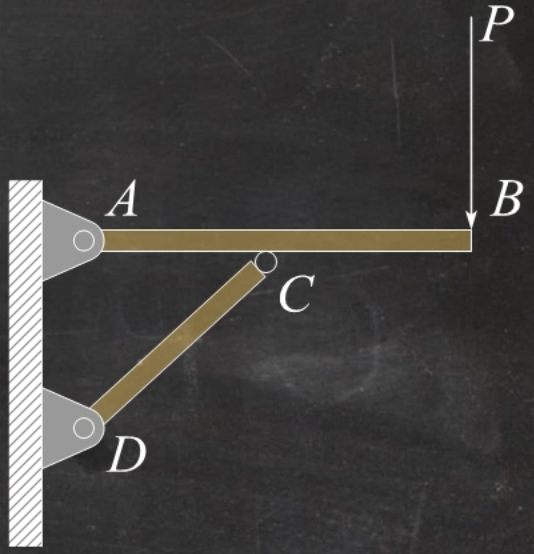
例题1
机构如图所示，不计各杆自重，试画出AB杆、CD杆的受力图
注意到CD杆是二力杆

点C受到FC的反作用力FC′，A点受到固定铰链支座约束，其约束力为一对正交分力
AB杆在A,B,C三点受到三个力。由三力汇交原理三力交于一点

第二章 平面力系
平面力偶系
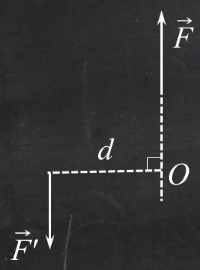
力偶就是等值、反向不共线的两个力
力偶矩M=±Fd（逆时针为正，顺时针为负）
平面力偶矩的性质
- 力偶在任意坐标轴上投影为0
- 力偶没有合力，只能由力偶来平衡
- 力偶对任意点取矩都等于力偶矩，不因矩心改变而改变
- 只要保持力偶矩不变，力偶可以在其作用面内任意移转，且可以改变力偶中力的大小与力偶臂的长短，对刚体的作用效果不变。
力偶矩的合成与平衡
合力偶矩 M=∑Mi
力的平移定理
作用在刚体上一点的力F可以平移到另一点，但必须同时附加一个力偶，这个附加力偶的矩等于原来的力对新作用点的矩。

平面任意力系

主矢FR′=∑Fi，与简化中心无关
主矩MO=∑MO(Fi)，与简化中心有关
向一点简化的结果
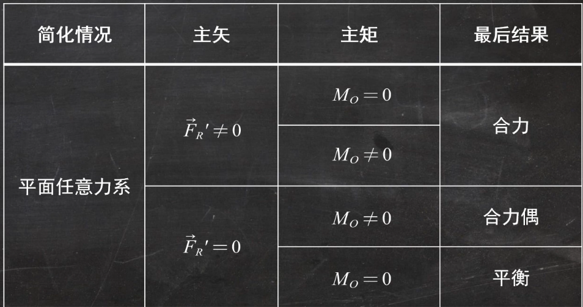
平面任意力系的平衡
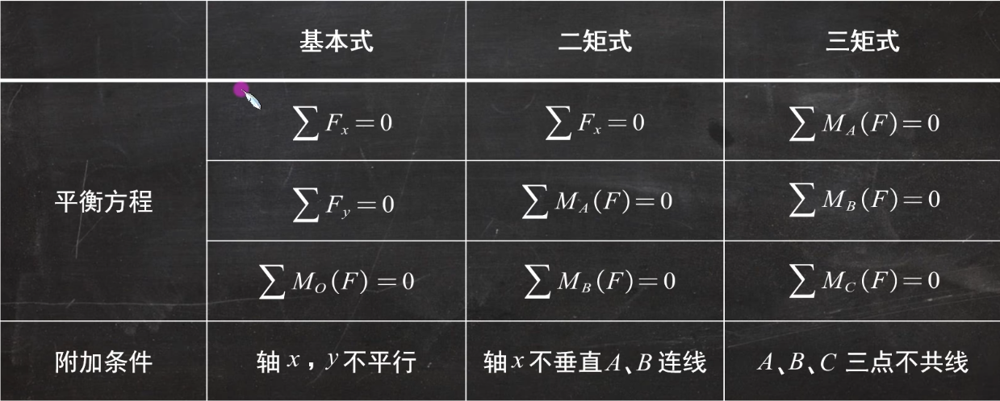
由此可知，平面任意力系的平衡方程最多求解出三个未知量。因此，选取研究对象时应选择未知量小于等于三个的。
例题2

如图所示，已知F=20kN,M=8kN⋅m，a=0.8m，q=100kN/m。求支座B、C的反力。
B处为固定铰链支座约束，C处为活动铰链支座约束

如图所示
⎩⎨⎧∑Fx=0FBx=0∑Fy=0qa+F−FBy−FC=0∑MB=0−F⋅3a+FC⋅2a+qa⋅21a=0⇒⎩⎨⎧FBx=0FBy=95kNFC=5kN
例题3

连续梁由AB和BC两部分组成，其所受载荷如图所示，求固定端A和铰链支座C的约束反力。
A处为固定端约束，受到一对正交约束力和一对力偶的作用，即三个未知量；C处为活动铰链支座约束，受到一个正交约束力作用，共有四个未知量，以整体为研究对象不可取。

以BC梁为研究对象时B处为中间铰链约束，受到一对正交约束力作用，C处为活动铰链支座约束，共三个未知量
⎩⎨⎧∑Fx=0FBx−P⋅cos60∘−FC⋅sin30∘=0∑Fy=0FBy−P⋅sin60∘+FC⋅cos30∘=0∑MB=0−M−P⋅sin60∘⋅a+FC⋅cos30∘⋅2a=0
FBx=43P+23αMFBy=43P−2αMFC=3αM+21P
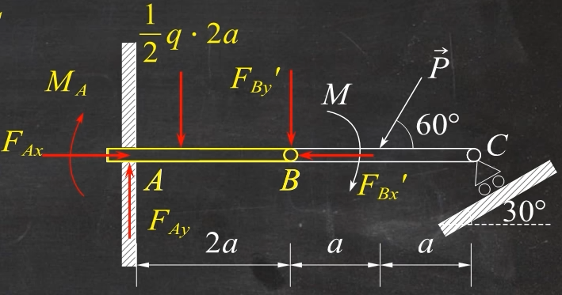
三角形分布载荷的大小为21⋅2qa，作用点等效与距离A点31⋅2a处
⎩⎨⎧∑Fx=0FAx−FBx′=0∑Fy=0FAy−q⋅2a⋅21−FBy′=0∑MA=0−MA−2qa⋅21⋅31⋅2a−FBy′⋅2a=0
FAx=43P+23aMFAy=43P−2aM+qaMA=M−23Pa−32qa2
例题4

图示结构中物体Q重1.2kN,AD=DB=2m，CD=DE=1.5m，不计杆与滑轮自重，求A,B处的支座反力及杆BC的内力。
对整体而言，A处为固定铰链支座约束，有两个未知力，B点为活动铰链支座约束，有一个未知力，其余外力已知
画出约束力如右图

FT=P=1.2kN
可以列出平面任意力系的平衡方程
⎩⎨⎧∑Fx=0FAx−FT=0∑Fy=0FAy+FB−P=0∑MA=0FB⋅4−P(2+r)−FT(1.5−r)=0
FAx=FT=1.2kNFB=1.05kNFAy=0.15kN
下面求BC杆的内力，显然BC杆是二力杆。

将CDE杆以及重物分离出来，对D点取矩（因为D点的两个力不需要求解）
∑MD=0−FBC⋅sinθ×1.5−p⋅r−FT(1.5−r)=0FBC=−sinθP=−22+1.5221.2kN=−1.5kN
桁架内力计算
节点法
节点法适用于求桁架中所有杆件内力情况

平面汇交力系只有两个独立的平衡方程，一般选取不超过两个未知力的节点作为研究对象
解题步骤
- 取整体为研究对象求约束反力
- 选取节点，列平衡方程求内力
例题5
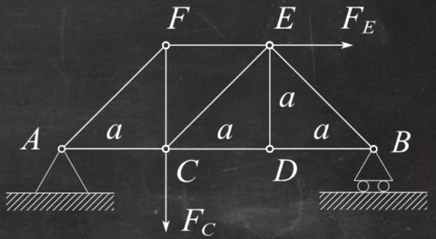
如图平面桁架,求杆AF、AC的内力。已知铅垂力FC=4kN,水平力FE=2kN。
先取整体为研究对象

⎩⎨⎧∑Fx=0FAx−FE=0∑Fy=0FAy+FB−FC=0∑MA=0FB⋅3a−FE⋅a−FC⋅a=0FAx=−2kNFAy=2kNFB=2kN
取点A
{∑Fx=0∑Fy=0⇒{FAx+FAC+FAFcos45∘=0FAy+FAFsin45∘=0
解得
{FAF=−22kNFAC=4kN
截面法
适用于求桁架中几根杆内力情况
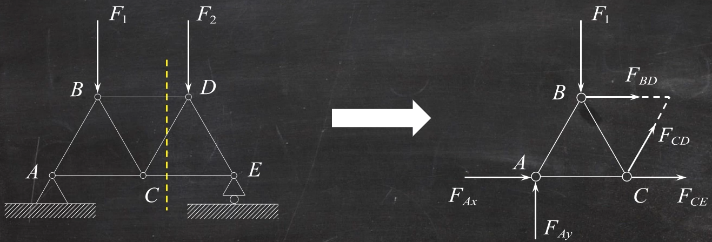
平面任意力系只有3个独立平衡方程，一般截断的杆件不超过三根
静定与超静定问题
未知量数目等于独立方程数目，是静定问题:
未知量数目超过独立方程数目，是静不定(超静定)问题
例题6
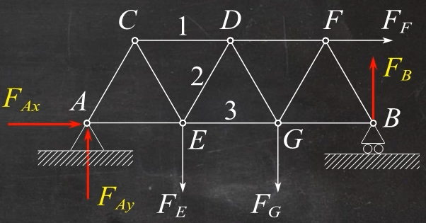
图示平面桁架,各杆长度均为1m,在节点E、G、F上分别作用载荷FE=10kN,FG=7kN,FF=5kN，计算1,2,3杆的内力
先以桁架整体为研究对象
⎩⎨⎧∑Fx=0FAx+FF=0∑Fy=0FAy+FB−FE−FG=0∑MB(F)=0FE⋅2+FG⋅1−FAy⋅3−FFsin60∘⋅1=0
解得
⎩⎨⎧FAx=−5kNFAy=7.557kNFB=9.44kN

取截面左半部分为研究对象
⎩⎨⎧∑ME(F)=0∑Fy=0∑MD(F)=0
⎩⎨⎧−F1⋅sin60∘⋅1−FAy⋅1=0FAy+F2⋅sin60∘−FE=0FE⋅21+F3⋅sin60∘⋅1−FAy⋅1.5+FAx⋅sin60∘⋅1=0
解得F1=−8.726kNF2=2.821kNF3=12.32kN

第三章 空间力系
力对点的矩
Mo(F)=r×F
力对轴的矩
Mx(F)=yFz−zFyMy(F)=zFx−xFzMz(F)=xFy−yFx
x,y,z表示力的作用点的坐标
重心（形心）
半圆形重心

第四章 摩擦
滚动摩擦
还没写
第六章
第七章 点的合成运动
相对运动 牵连运动 绝对运动
习惯把固定在地球上的参考系称为定参考系，简称定系，以Oxyz坐标表示
固定在其他相对于地球运动的参考系上的坐标系称为动坐标系，简称动系，以Ox′y′z′坐标系表示
动点相对于定系的运动称为绝对运动（点的运动）
动点相对于动系的运动称为相对运动（点的运动）
动系相对于定系的运动称为牵连运动（刚体的运动）
点的绝对运动和相对运动之间的关系

Oxy是定参考系，O′x′y′是动参考系，M是动点，如图所示。动点M的绝对运动方程为
x=x(t),y=y(t)
动点M的相对运动方程为
x′=x′(t),y′=y′(t)
动参考系相对于定参考系的运动可以由如下三个方程完全描述：
xO′=xO′(t),yO′=yO′(t),φ=φ(t)
这三个方程称为牵连运动方程，其中φ角是从x轴到x′轴的转角，逆时针为正。动参考系与定参考系的坐标变换关系为
{x=xO′+x′cosφ−y′sinφy=yO′+x′sinφ+y′cosφ
一般动点和动系的选取原则
- 动点时两个刚体的接触点
- 动点和动系不在同一刚体上（要有相对运动）
- 相对运动和牵连运动轨迹容易看出（一般选带滑槽或相当于带滑槽的刚体选为动系）
点的速度合成定理
va=ve+vr
动点在某瞬时的绝对速度等于它在该瞬时的牵连速度和相对速度的矢量和
- 共含大小和方向六个元素，一般来说已知四个可以求另外两个（使用角度）
- 共含大小和方向六个元素，一般来说已知四个可以求另外两个（使用角度）
点的加速度合成定理
aa=ar+ae+aC
动点在某瞬时的绝对加速度等于它在该瞬时的牵连加速度、相对加速度和科氏加速度的矢量和
aC=2ω×vr
其中ω为动系绕定轴转动的角速度矢量（若动系做平动则为0）
例题7

图示机构中，已知O1O2=O1A=20cm,O1O2=O1A=20cm,O1A杆以匀角速度ω=3rad/s绕O1轴转动，求图示位置时套筒A相对于O2A杆的速度、O2A杆的角速度和O2A杆的角加速度
先进行运动分析。显然会选择A点作为动点，由于O2A杆有套筒，类似滑槽结构，因此选择O2A杆作为动系。
绝对运动：以O1点为圆心的圆周运动
相对运动：沿O2A杆的直线运动
牵连运动：以O2点为圆心的定轴转动
va=ve+vr
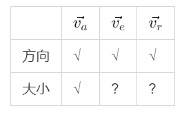
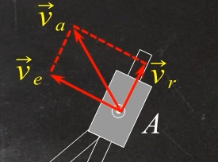
va=O1A⋅ω1=60cm/s
vr=va⋅sin30∘=30cm/s
ve=va⋅cos30∘=303cm/s
ωO2A=O2Ave=1.5rad/s
aaτ+aan=aeτ+aen+ar+ac
aan=O1A⋅ω12=180cm/s2
aen=O2A⋅ω22=453cm/s2
ac=2ω2×vr=90cm/s2
将加速度沿ac方向投影
aan⋅sin30∘=−aeτ+ac⇒aeτ=0
因此角加速度α2=0
特例（偏心轮）

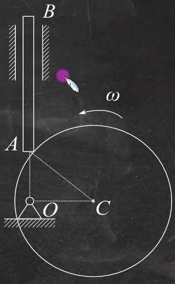
第八章 刚体的平面运动
刚体平面运动 = 随基点的平动 + 绕基点的转动
基点法

速度投影法

(vB)AB=(vA)AB
即vBcosα=vAcosθ
例题8
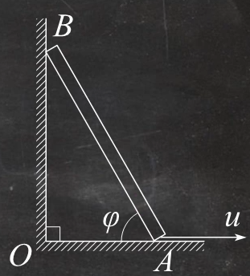
图中AB长l，滑倒时B端靠铅垂墙壁，已知A点以速度u沿水平轴线运动。求图示位置杆端B点的速度及杆的角速度
基点法
以A点为基点
vB=vA+vBA
|
vB |
vA |
vBA |
| 方向 |
√ |
√ |
√ |
| 大小 |
? |
√ |
? |

vB=tanφuvBA=sinφu
ωBA=lvBA=lu⋅sinφ1
速度投影法
由速度投影定理
νB⋅sinφ=νA⋅cosφ
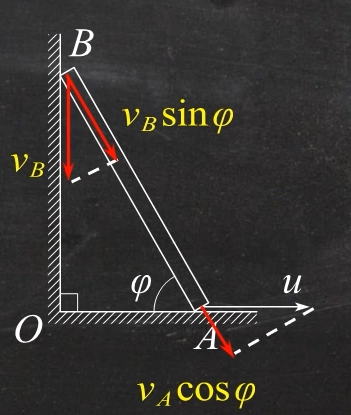
vB=tanφu
瞬心法
速度瞬心：只要ω=0，任一瞬时平面图形上都存在唯一一个速度等于0的点
右图其上任意一点P:vP=CP⋅ωω=ACvA
几种特殊的瞬心
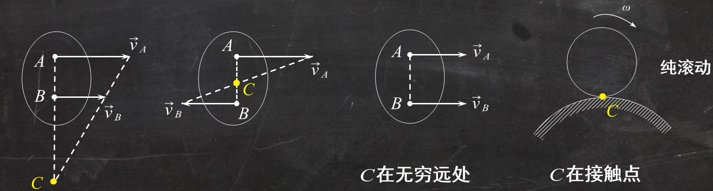
一个二级结论
纯滚动时，设滚动圆角加速度为α，过圆心的竖直线上距离滚动圆速度瞬心x处的加速度为α⋅x
如图所示，B点的速度为vB=(R+r)⋅α
例题9

如右图所示曲轴OA以角速度ω=2rad/s绕轴O转动，并带动等边三角形板ABC作平面运动。板上点B与杆O1B, 点C与套管C连接，而套管C可在绕O2转动的杆O2D上滑动，已知
OA=AB=O2C=1m,当OA水平,AB、O2D铅直，O1B与BC在同一直线上，求杆O2D的角速度
以套筒C为动点，杆O2D为动系
va=ve+vr
|
va |
ve |
vr |
| 方向 |
? |
√ |
√ |
| 大小 |
? |
? |
? |

由此，我们必须求出va的速度和方向
vA=OA⋅ω=2m/s
由图可知P点为刚体的速度瞬心
ωABC=PAvA=32rad/s
vC=PC⋅ωABC=32m/s
从而va的速度和方向都已知，就可以求出ve和vr的大小
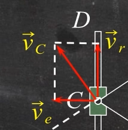
νe=νa⋅cos60°=33m/sωO2D=O2Cνe=33rad/s
加速度分析（主要使用基点法）
即aB=aA+aBA=aA+aBAτ+aBAn
其中aBAτ=AB⋅αaBAn=AB⋅ω2
例题10

如图所示,在椭圆规机构中，曲柄OD以匀角速度ω绕O轴转动,OD=AD=BD=L,求当φ=60°时，尺AB的角加速度和点A的加速度。
以D为基点，求A点的加速度
aA=aD+aADτ+aADn
|
aA |
aD |
aADτ |
aADn |
| 方向 |
√ |
√ |
√ |
√ |
| 大小 |
? |
√ |
? |
? |

由于aA和aADτ都是我们要求的量，我们必须求出aADn
aADn=ωAB2⋅AD
找到杆AB的瞬心C，可以求得ωAB=DCvD=lωl=ω
aADn=ω2⋅AD=ω2⋅l
回到加速度分析
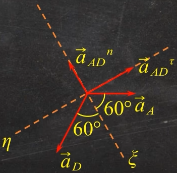
{aA⋅cos60∘=aDcos60∘−aADnaA⋅sin60∘=−aD⋅sin60∘+aADτ
{aA=−lω2aADτ=0
αAB=ADaADτ=0
例题11
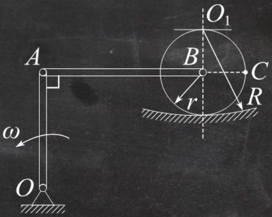
曲柄OA以恒定的角速度ω=2rad/s绕轴O转动，并借助连杆AB驱动半径为r的轮子在半径为R的圆弧槽中作无滑动的滚动，设OA=AB=R=2r=1m，求图示瞬时点B和C的速度与加速度。
易知图示位置A点速度水平向左，大小为vA=OA⋅ω=R⋅ω=2m/s
而B点与瞬心的连线竖直，也就是说，B点的速度方向水平
因此此时vBA=0，AB杆此瞬时平动，也即ωBA=0
vA=vB=2m/s

D点为速度瞬心，ωB=rvB=4rad/s
vC=ωB⋅2r=22m/s
此处B点绕O1点做圆周运动，因此其加速度也可分为切向和法向进行分析
aBτ+aBn=aA+aBAτ+aBAn

aA=ω2⋅OA=4m/s2
aBn=R−rvB2=8m/s2
aBAn=ωAB2⋅AB=0
|
aBτ |
aBn |
aA |
aBAτ |
aBAn |
| 方向 |
√ |
√ |
√ |
√ |
√ |
| 大小 |
? |
√ |
√ |
? |
√ |
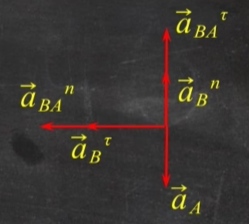
由图，aBτ=aBAn=0
可知aB=aBn=8m/s2
以B点为基点，求C点的加速度
aC=aB+aCBt+aCBn
由aBτ=0，可知αB=0，刚体旋转的角加速度为0，故aCBτ=0
aCBn=ωB2⋅CB=8m/s2
|
aC |
aB |
aCBt |
aCBn |
| 方向 |
? |
√ |
√ |
√ |
| 大小 |
? |
√ |
√ |
√ |
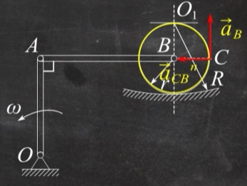
aC=aB2+(aCBn)2=82m/s
第十章 动量定理
质心的位置
xc=∑mi∑mixi=m∑mixiyc=∑mi∑miyi=m∑miyi
质点系和刚体的动量p=mvc，此处vc为质点系或刚体质心的速度
例题12

杆重G，长为L，已知图示瞬间的ω、α，求该瞬时O点的约束反力。
aCt=2L⋅αaCn=2L⋅ω2
由质心运动定理，{maCx=∑Fx(e)FOx=−maCnmaCy=∑Fy(e)G−FOy=m⋅aCt
解得
{FOx=−2gGLω2FOy=G−2gGLα
注：求约束反力可以考虑使用质心运动定理
第十一章 动量矩定理
常见均质物体的转动惯量

回转半径
回转半径ρz满足
Jz=ρz2⋅m
平行轴定理

Jz=Jzc+md2
质点的动量矩
MO=r×mv
刚体的动量矩
平动刚体对O点的动量矩
LO=rC×mvC
定轴转动转动刚体
Lz=Jz⋅ω
一般情况
LO=rC×mvC+JC⋅ω
动量矩定理
dtdLO(mv)=MO(F)
例题13
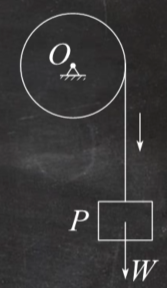
匀质圆轮半径为R，质量为m，圆轮在重物P带动下绕固定轴O转动。已知重物重量为W，求重物下落的加速度
取整体为对象，设圆轮的角速度、角加速度分别为ω、α，重物的速度、加速度分别为v、aP，则
圆轮对轴O：LO1=JOω=21mR2ω
重物对轴O：LO2=mvR=gWvR
整体对轴O：LO3=gWvR+21mR2ω
由动量矩定理，dtdLO3=W⋅R
也即21mR2⋅α+gWaP⋅R=WR
解得aP=2m+gWW
刚体定轴转动的微分方程
由动量矩定理易知
Jz⋅α=∑Mz(Fi)
刚体平面运动的微分方程
⎩⎨⎧maCx=∑FxmaCy=∑FyJC⋅α=∑MC(Fi)or⎩⎨⎧maCτ=∑FiτmaCn=∑FinJC⋅α=∑MC(Fi)
例题14
如图杆OA重W=mg，长为l,A端用绳拉住,OA杆水平，当绳子突然剪断时，求O端约束。
绳子突然剪短瞬时ω=0,α=0
JO⋅α=MO=mg⋅2l
JO=31ml2
可求得α=2l3g

aCn=ω2⋅2laCτ=α2l=43g
由质心运动定理，
maCn=−FOx=0maCτ=mg−FOy
FOx=0FOy=mg−maCτ=41mg
例题15
重物A质量为m1，系在绳子上，绳子跨过不计质量的固定滑轮D，并绕在鼓轮B上，如图示，由于重物下降，带动轮C，使它沿水平轨道滚动而不滑动，设鼓轮半径为r，轮C半径为R，两者结合在一起，总质量为m2，对于其水平轴O的回转半径为ρ，求重物的加速度。
由轮子做纯滚动，aA=aB=α(r+R)
aO=αR
m1g−FT=maA
由质心运动定理，FT−Fs=maO
由动量矩定理，JOα=Fs⋅R+FT⋅r
JO=m2ρ2
aA=m1(R+r)2+m2(ρ2+R2)m1g(r+R)2
第十二章 动能定理
平动刚体动能
T=21mvC2
定轴转动刚体动能
T=21Jzω2
一般情况
T=21mvC2+21JCω2

图示机构中，物块A,B质量均为m，两均质圆轮C、D的质量均为2m，半径均为R，轮C铰接于无重梁CK上,D为动滑轮。梁的长度为3R，绳与轮间无滑动，系统由静止开始运动求A物块上升的加速度。
初始系统动能T1=0
系统动能T2=21mvA2+21mvB2+21JCω2+21JDω2+21mvD2
其中ωC=RvAωD=RvB=2RvAJC=21⋅2mR2JD=21⋅mR2
T2−T1=23mvA2
W12=−mgs+(2m+m)g⋅2s=21mgs
21mgs=23mvA2
两边对时间求导
aA=61g
第十三章 达朗贝尔原理
质点系的达朗贝尔原理
作用在质点系上的所有外力与所有质点的惯性力系在形式上组成平衡力系
平衡条件：
{∑Fi(e)+FIi=0∑MO(F(e))+∑MO(F(Ii))=0
刚体惯性力系向任一点的简化
惯性力系下惯性力的主矢与简化中心无关，主矩与简化中心有关
⎩⎨⎧∑FIR=−maC∑MIO=−dtd(LO)
| 刚体运动形式 |
简化中心 |
简化结果 |
| 平移 |
质心C |
{FIC=−maCMIC=0 |
| 定轴转动（对于具有质量对称平面的刚体），转轴Z与对称平面交点O不过质心 |
交点O |
⎩⎨⎧FIRτ=−maCτFIRn=−maCnMIZ=−Jzα |
| 转轴Z与对称平面交点O不过质心 |
质心C |
{FIC=0MIC=−Jzα |
| 平面运动 |
质心C |
{FIC=−maCMIC=−JCα |
第十四章 虚位移原理